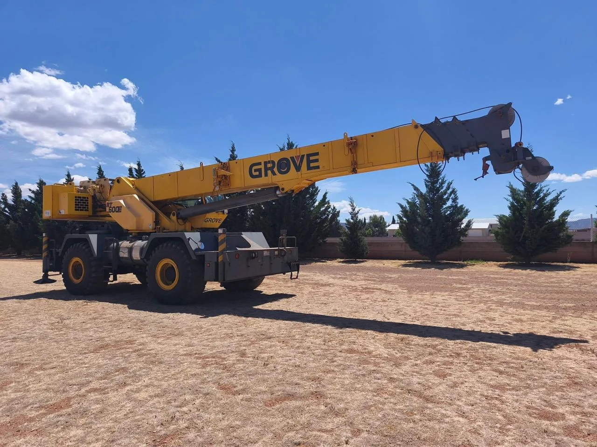

Patios industriales
Aplicación habitual de grúas todo terreno. La unidad y configuración se validan según el trabajo, acceso, alcance y condiciones de operación.
Grúas compactas y maniobrables para patios, obra y terrenos irregulares donde se requiere movilidad dentro del sitio de trabajo.

La capacidad y el alcance se determinan según modelo, radio de trabajo y condiciones del terreno.
Patios industriales, obra, maniobras en terreno irregular y montajes.
Estas son aplicaciones frecuentes de grúas todo terreno. La configuración final depende del equipo, el sitio, el alcance y las condiciones reales de operación.
Aplicación habitual de grúas todo terreno. La unidad y configuración se validan según el trabajo, acceso, alcance y condiciones de operación.
Aplicación habitual de grúas todo terreno. La unidad y configuración se validan según el trabajo, acceso, alcance y condiciones de operación.
Trabajo de apoyo en obra donde el tipo de terreno, volumen de material, accesos y espacio de maniobra determinan la configuración.
Aplicación frecuente de grúas todo terreno cuando el proyecto requiere elevación, posicionamiento o coordinación controlada de la carga.
Aplicación frecuente de grúas todo terreno cuando el proyecto requiere elevación, posicionamiento o coordinación controlada de la carga.
Aplicación habitual de grúas todo terreno. La unidad y configuración se validan según el trabajo, acceso, alcance y condiciones de operación.
Una solicitud completa ayuda a revisar la maniobra desde el primer contacto y reduce vueltas innecesarias antes de preparar la cotización.
Peso aproximado, dimensiones y características generales de la carga.
Distancia entre el equipo y el punto donde se tomará o colocará la carga.
Altura de trabajo, obstáculos y alcance requerido para la maniobra.
Espacio de estabilización, ingreso al sitio y condiciones de apoyo.
Respuestas rápidas para preparar mejor tu proyecto y elegir la solución adecuada.
Ubicación, fecha, peso aproximado, dimensiones, altura, radio de trabajo y fotografías del sitio cuando sea posible.
No. La capacidad efectiva cambia con el radio, alcance, configuración y condiciones de operación; por eso la maniobra se revisa antes de confirmar.
Sí. Fotografías de accesos, carga, punto de trabajo y entorno ayudan a orientar la selección del equipo.
El cotizador concentra servicio, ubicación, fecha, peso, altura y datos de contacto.